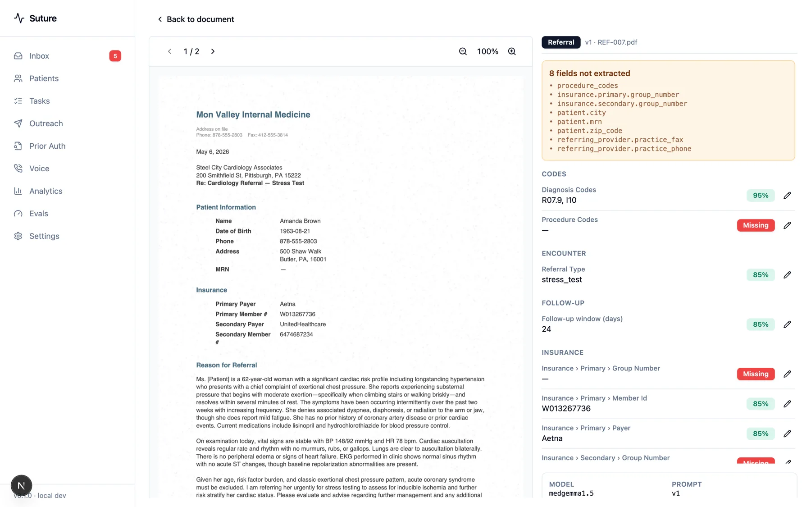
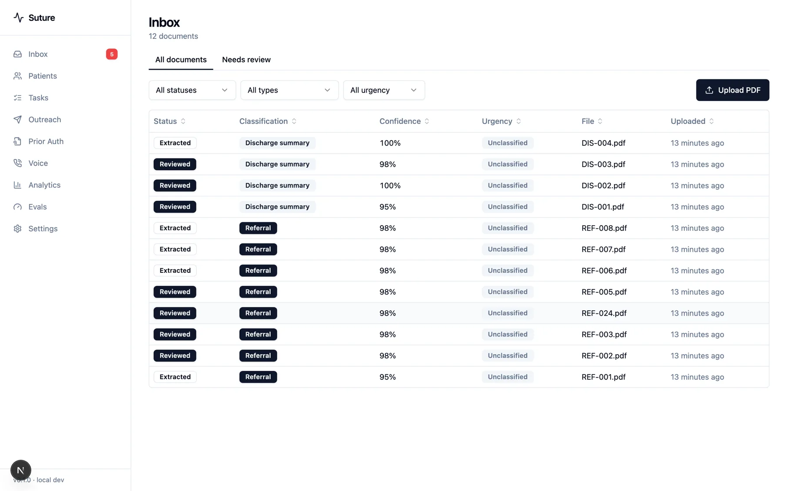
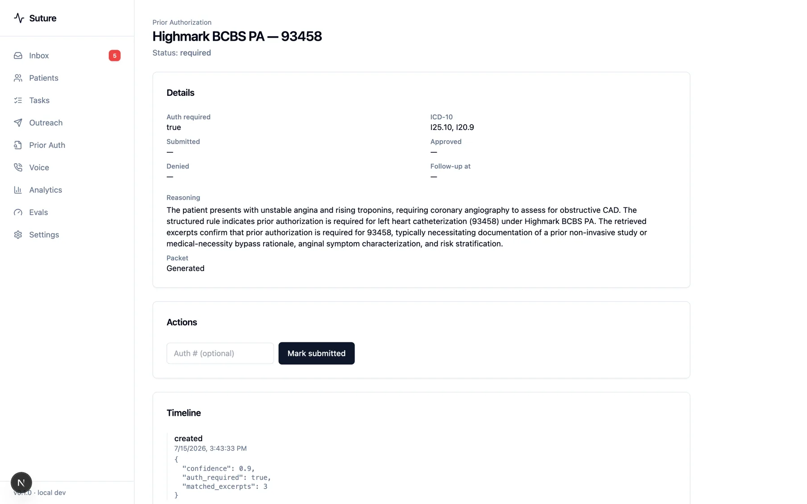
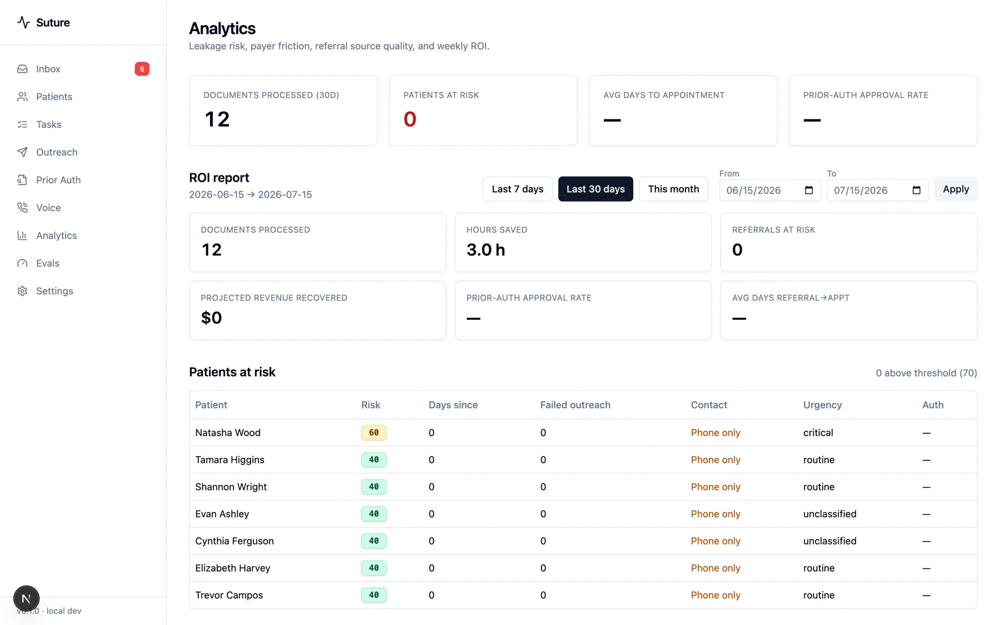

Referrals that quietly die
A referral sits unopened, the patient goes elsewhere, and nobody finds out for a month. Suture tracks every inbound document to a booked appointment, or flags it as at risk.
Suture reads inbound referral and discharge faxes, pulls out the fields that matter, routes what a human actually needs to see, and chases the patient until the follow-up is on the calendar.
Independent practices lose referrals in the gap between a PDF landing in a queue and someone finding time to key it in. Suture closes that gap without asking anyone to change how they refer.
A referral sits unopened, the patient goes elsewhere, and nobody finds out for a month. Suture tracks every inbound document to a booked appointment, or flags it as at risk.
Name, DOB, payer, member ID, diagnosis codes, referral reason. Extracted automatically, each field scored, and only the uncertain ones put in front of staff.
Whether Highmark or UPMC requires auth for a given CPT code, what documentation the packet needs, and a draft appeal when it comes back denied.
A cadence across text, email, and voice, with a self-scheduling link, then a confirmation fax back to the hospital that discharged them.
Not mockups. These are screens from the working application, taken against a seeded Western PA dataset.




Seeded cardiology data. Same pipeline, aimed at independent specialty practices.
Three minutes, one referral, start to finish: upload through extraction, review, and outreach.
A HIPAA-class workload built solo, with the load-bearing decisions written down in eleven architecture decision records.
Tenant scoping is enforced once at the ORM session layer, not repeated in every query. If the clinic context is missing, the query raises. It does not return unfiltered rows.
Date of birth, phone, SSN, and insurance member IDs are Fernet-encrypted field by field. The append-only audit trail records who touched what and which columns changed, but never the values.
Every model call goes through a provider interface. The default runs entirely on-premise via Ollama; a practice that wants a hosted frontier model brings its own key. No patient record has to leave the building.
Extraction accuracy is scored against a ground-truth corpus (per-field precision, recall, and F1, recorded per run), so a prompt or model change is a diff, not a vibe. Field confidence is computed from validators, never self-reported by the model.
| Capability | State | Detail |
|---|---|---|
| OCR, classification, extraction | Working | Docling with a pypdf fallback, then field extraction with per-field confidence. |
| Human review & approval | Working | Side-by-side document and fields; approval creates the patient and referral records. |
| Workflow, SLA tasks, analytics | Working | State machines for referrals and discharges, with leakage and ROI reporting. |
| Prior-auth retrieval & packet | Working | Payer-rule retrieval with cited excerpts, generated packets and appeals. |
| Fax, SMS, email delivery | Stubbed | The pipeline runs and is fully audited; nothing leaves the machine yet. |
| Outbound phone calls | Stubbed | The voice agent works in-browser; telephony is deliberately deferred. |
| Design partners | Looking | Zero practices live. That's what this page is for. |
No pitch deck, no demo gauntlet. Tell me where referrals get stuck in your office and I'll tell you honestly whether this helps yet.